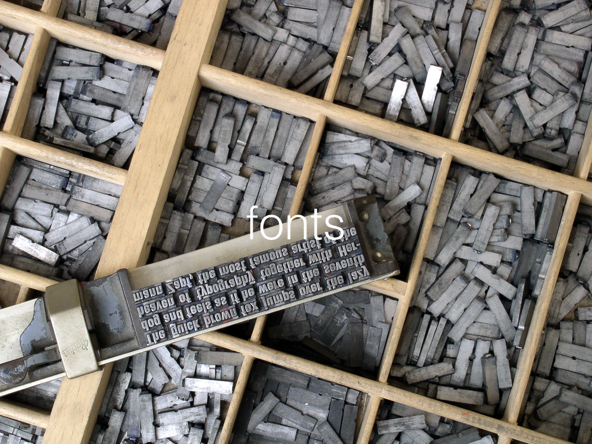
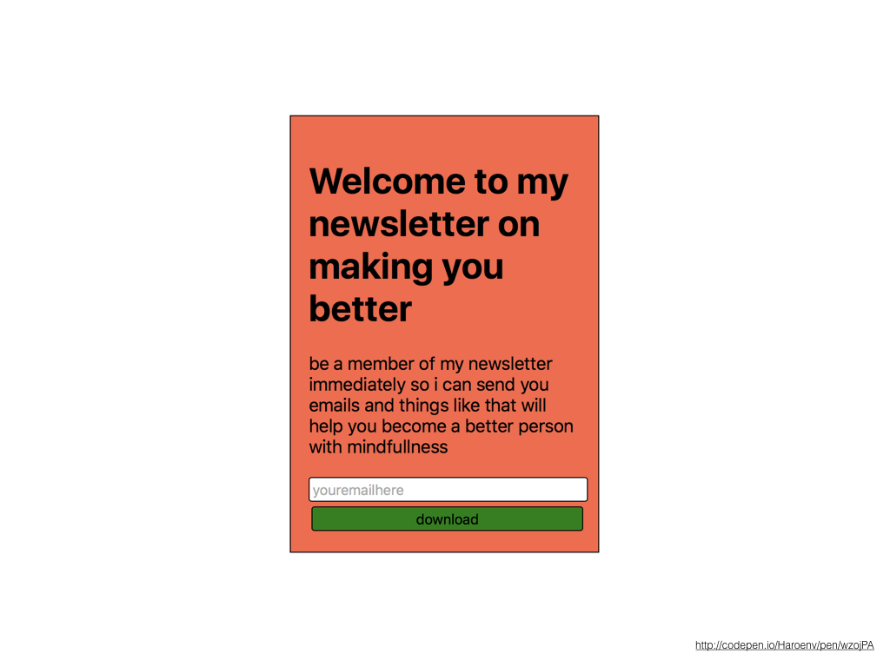
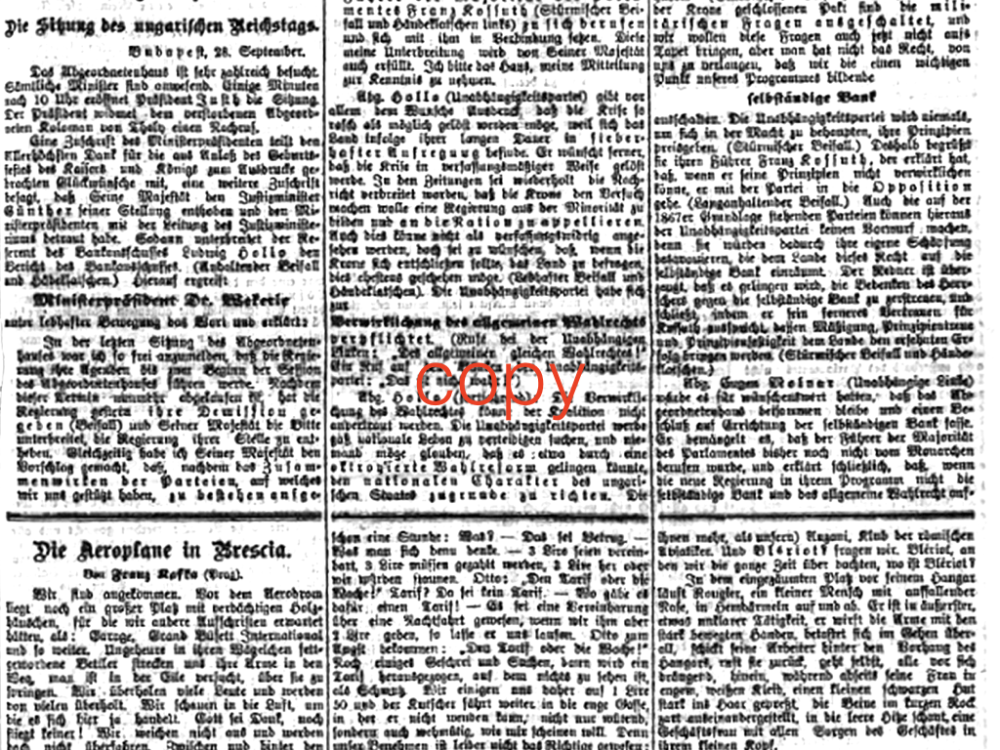
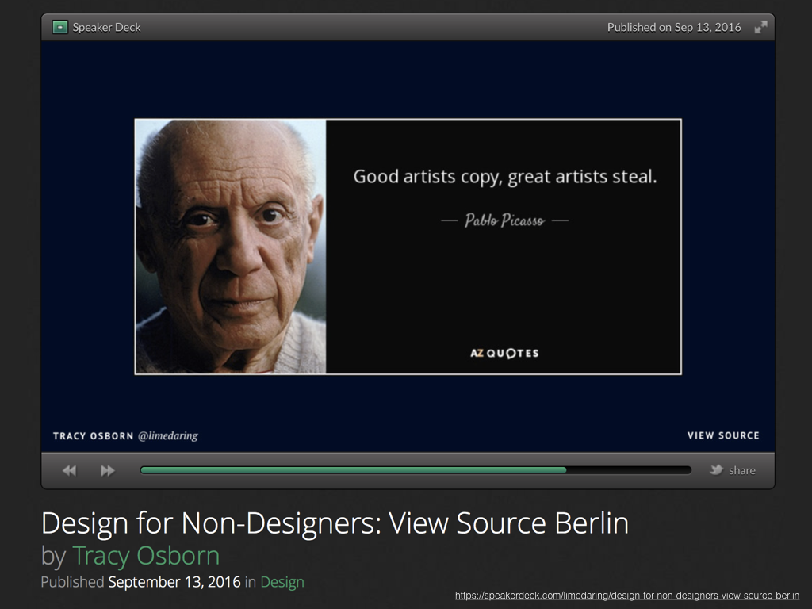

into this thing, where we have even spacing, and generous margins http://codepen.io/Haroenv/pen/ozYdZg
 fonts are fun, use them! But use them sparingly. Use just one or two of them, and try to stick to system fonts as much as possible to avoid FOIT and FOUT
 this, where we only use system fonts (in this case San Francisco, with fallbacks for other environments, like Roboto …) codepen.io/Haroenv/pen/wzojPA
 copy is the most important part of a site, the design is supposed to support the actual content on the site
 Even this page isn’t invented by myself, it was mostly inspired/rehashed content by Tracy Osborn, when I saw her speak at View Source 2016 in Berlin.